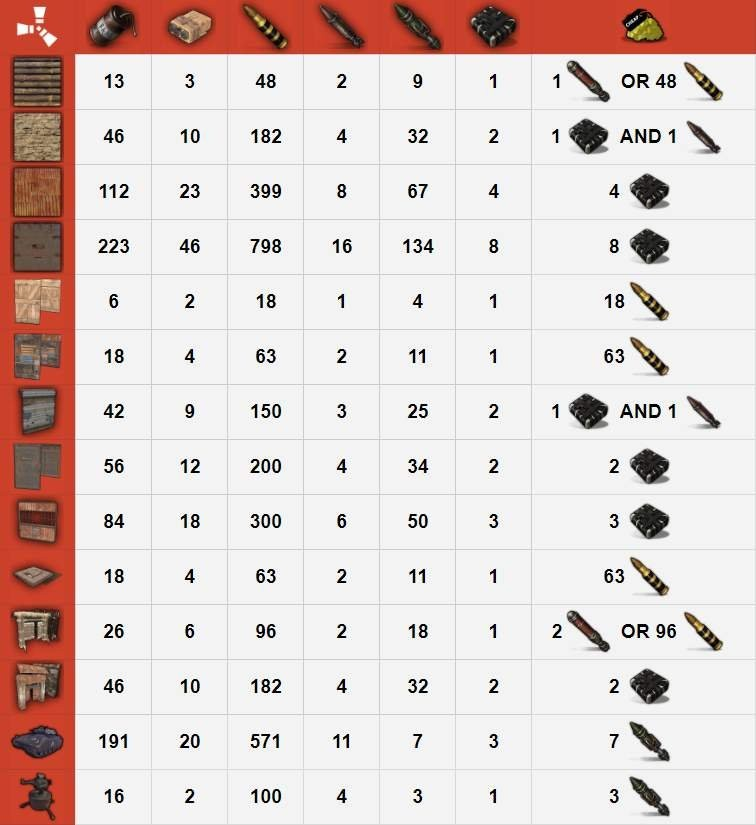
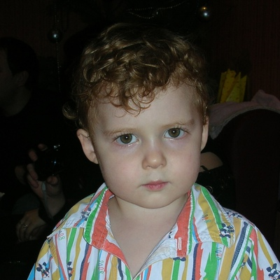

Об этой игре. Единственная цель в Rust – выжить. Для этого вам понадобится преодолеть такие трудности, как голод, жажда и холод. Разведите костер. Постройте убежище. Убивайте животных, чтобы добыть мясо. Защищайте себя от других игроков и убивайте их, чтобы добыть мясо. Создавайте союзы с другими игроками и сформируйте город.
Отдельный калькулятор
Таблица расчета ресурсов

Rust — компьютерная игра в жанре симулятора выживания, была создана независимой британской компанией Facepunch Studios, возглавляемой c 2014 года Гарри Ньюмэном. Игра была выпущена в раннем доступе в декабре 2013 года, 8 февраля 2018 года состоялся её полноценный релиз для Windows и macOS. Версии для PlayStation 4 и Xbox One, разрабатываемые совместно со студией Double Eleven, были выпущены 21 мая 2021 года. Rust изначально создавался как клон DayZ с элементами крафтинга, схожими с таковыми в Minecraft.В 2014 году разрабатываемая игра была переведена на новый игровой движок. Версия на старом движке стала именоваться Legacy, а новая получила название Experimental. 6 октября 2016 года из клиентской части игры была удалена возможность запуска версии Legacy.Новая версия игры глубоко отличается от Legacy, во многом благодаря новой версии движка Unity.Хотя большинство предметов, бывших в Legacy, перенесены в новую версию, многие из них были изменены. Появились и новые виды различного снаряжения. Также в новой версии была изменена система строительства — проработана система гниения построек и добавлен показатель устойчивости, что не позволяет игрокам строить огромные «замки до небес». К тому же добавлены двойные двери, люки, лестницы и ограждения.На многих игровых серверах карта процедурно-генерируемая. Это означает, что в игре отсутствует единая игровая карта для всех игровых серверов.Система чертежей, как в Legacy, вносила в игру элемент high-end контента. Были доступны базовые предметы для крафта, но для более серьёзных вещей требовались чертежи.В ноябре 2016 года система опыта была заменена на систему компонентов. Игрокам стал доступен крафт всех вещей, но для некоторых предметов необходимы детали — компоненты.16 июля 2015 года разработчики добавили возможность покупать вещи с раскрасками на торговой площадке Steam и в магазине игры. Данная покупка не даёт никаких преимуществ, а всего лишь изменяет внешний вид предмета в игре.В октябре 2016 в Rust была добавлена поддержка Мастерской Steam, что позволило игрокам создавать свои раскраски для предметов.В ноябре 2016 года появилась возможность превращать скины во фрагменты: дерева, металла, ткани. За них можно купить контейнеры, открыв которые, игрок получает случайный скин.8 февраля 2018 года Rust вышел из раннего доступа. 14 ноября 2019 года на мероприятии X019 было объявлено, что Rust выйдет на Xbox One и PlayStation 4 в 2020 году, а издателем обеих версий выступит компания Double Eleven.Но после создатели Rust объявили, что выживание на PS4 и Xbox One слегка задержится — теперь она ожидается здесь только в 2021-м. 21 мая 2021 года состоялся релиз Rust на консолях PlayStation 4 и PlayStation 5, а также на Xbox One.После релиза Rust получил «смешанные или средние» отзывы на агрегаторе рецензий Metacritic. Критики высоко оценили PvP-бои, сложность и элементы выживания, при этом гриндинг и то, с каким опытом сталкиваются новые игроки, подверглись некоторой критике

Дегтяренко Станислав
Студент ЛГУ им. В. Даля, факультета КСИТ. Изучает языки программирования, и всё что нужно программисту. Родился в 2005 году, в городе...
Читать дальше